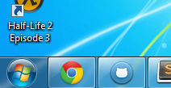
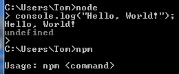
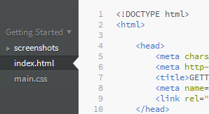
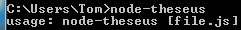
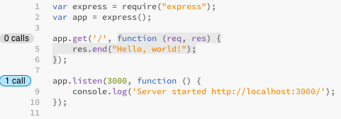
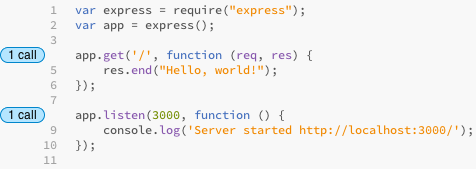
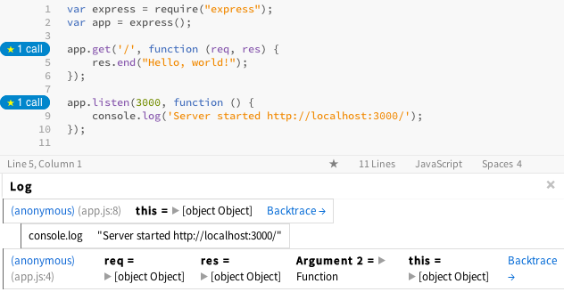

Node.js is a platform for writing network applications (such as web servers) in JavaScript.
You could be using Ruby on Rails, Django, or PHP. Why write your web server with Node.js?
Felix's Node.js Convincing the boss guide has a list of good and bad reasons to use Node.js.
You should already have the pre-requisite software installed:
|
Windows or OS X |
Use the installation disks that came with your computer to install Windows or OS X. |
You know it worked if:
 |
|
Node.js |
Use the big install button on their web page to download an installer. |
You know it worked if:
 |
|
Brackets |
You know it worked if:
 |
|
|
Theseus |
Theseus:
node-theseus:
|
You know it worked if:
 |
You write JavaScript code in files ending with .js and run them in a terminal with a command like node app.js.
Create a folder in a convenient location (such as your desktop) named node-course.
In Brackets, click the File > Open Folder... menu item and open the folder you created.
Click the File > New File... menu item and name the file app.js.
Type the following code in the file and save it:
console.log("Hello, World!");
Open a terminal, change to the node-course directory, and run the command node app.js. It should look like this on OS X:
$ cd ~/Desktop/node-course $ node app.js Hello, World!
It should look something like this on Windows:
> cd "C:\Documents and Settings\Your Name\Desktop\node-course" > node app.js Hello, World!
In the terminal you have open in the node-course directory, run npm install express. It should look like this:
$ npm install express [lots of output, ending with...] express@3.1.0 ./node_modules/express ├── methods@0.0.1 ├── fresh@0.1.0 ├── range-parser@0.0.4 ├── cookie-signature@0.0.1 ├── buffer-crc32@0.1.1 ├── cookie@0.0.5 ├── debug@0.7.2 ├── commander@0.6.1 ├── mkdirp@0.3.3 ├── send@0.1.0 (mime@1.2.6) └── connect@2.7.2
Modules are installed to the current directory by default, in a sub-directory named node_modules.
Delete the console.log statement we have in app.js and replace it with the following code. Hover over the highlighted portions of the code for descriptions of the parts that you'll be changing later.
var express = require("express");
var app = express();
app.get('/', function (req, res) {
res.end("Hello, world!");
});
app.listen(3000, function () {
console.log('Server started at http://localhost:3000/');
});
Run node app.js in the terminal again:
$ node app.js Server started at http://localhost:3000/
Does it work? Try visiting http://localhost:3000/. You should see "Hello, World!" on the page and nothing else.
Kill the web server by pressing Ctrl+C in the terminal.
Run the server again, but use node-theseus this time:
$ node-theseus app.js Server started at http://localhost:3000/
Within a few seconds, Brackets should show call counts to the left of every function in the code, like this:

This is a feature of the extension you installed called Theseus.
When you refresh http://localhost:3000/ one or more times, the call counts update in real-time:


Install npm packages with npm install [package-name]. Express is a Node.js library for creating web servers that you install with npm.
Create a web server like this:
var express = require("express");
var app = express();
app.get('/', function (req, res) {
res.end("Hello, world!");
});
app.listen(3000, function () {
console.log('Server started at http://localhost:3000/');
});
To enable debugging with Theseus (showing call counts next to the code), launch Node.js with node-theseus app.js instead of node app.js.